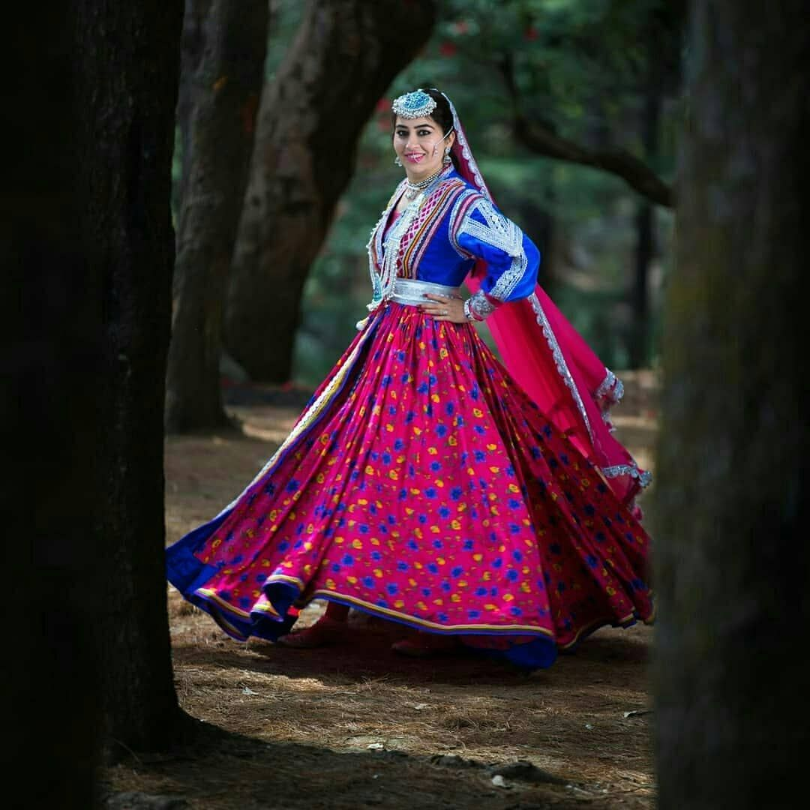

Ghagra:
Fitted with the choli is the ghagra, a pleated skirt that absolutely flares around the waist with the flow and colorful details of the dress. Traditionally woven with wool or cotton, the ghagra is embroidered with colorful patterns and motifs, thus denoting the creative finesse of Himachali artistry.